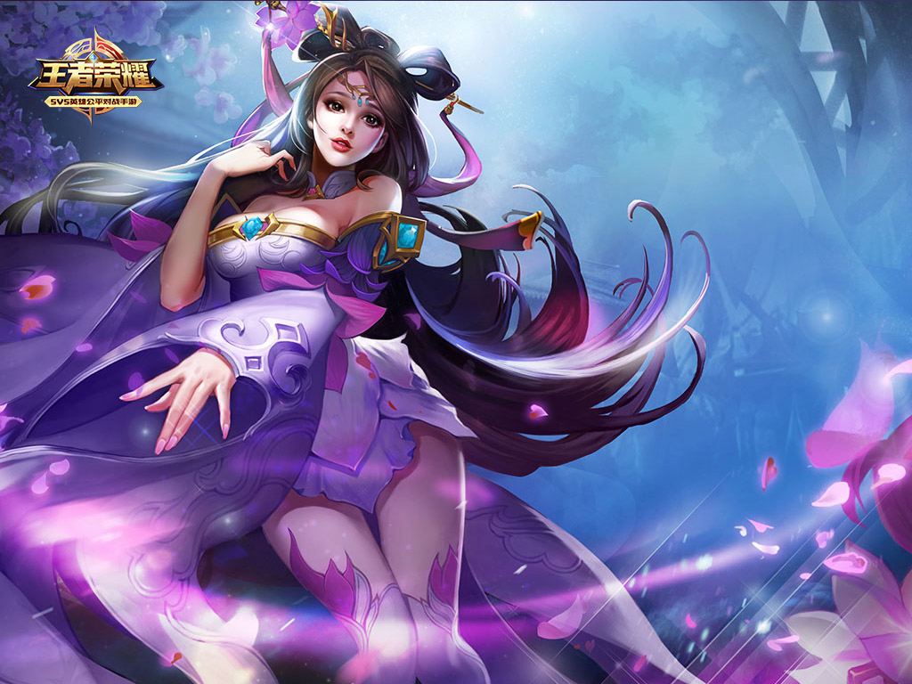
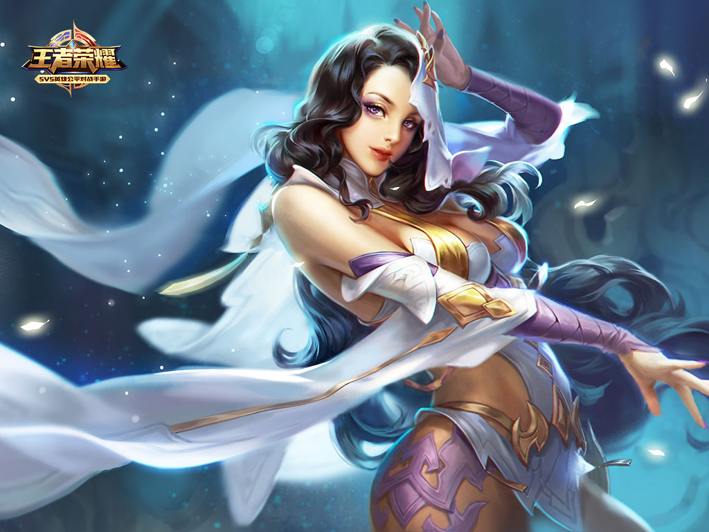
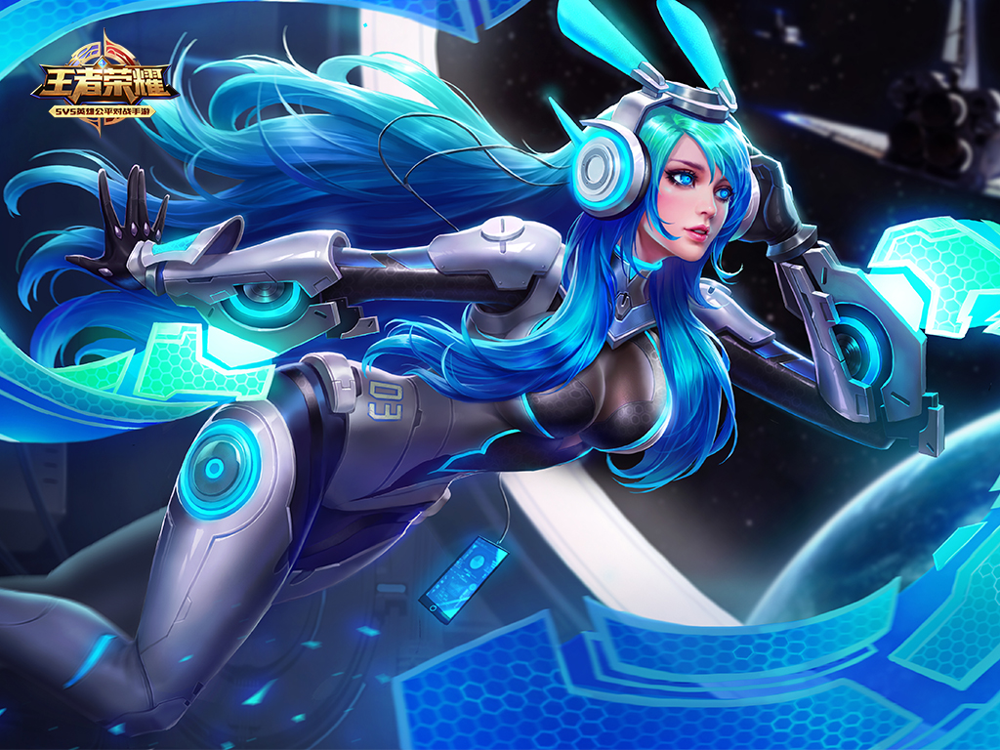
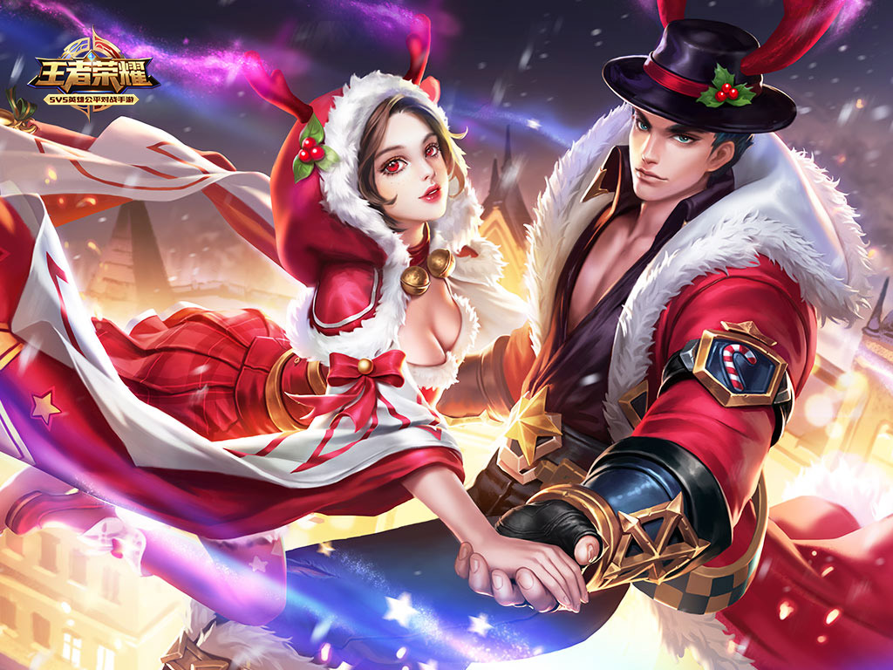

貂蝉
你，会跳舞吗？
满天花雨中，舞动着曼妙的身姿。无数眼光目不转睛。
一直跳下去吧……
“这个乱世中，你的存在就是一个梦。让男人们做梦就好了，他们会全部屈从在你的舞裙之下。”
梦里，唯一清醒的就是自己。
清醒，是为了活下去。
她替胜利者斟满美酒。男人高冠长翎，容貌堂堂，带着满身的酒意紧紧挽住她的手腕。“貂蝉，等着。明日一过，我会把天下呈到你的面前……”
战神吕布，是在袒露真心吗？她的眼中充满敬仰和感动，真切的连自己都会被欺骗。要争夺那活下去的机会时，真心是如此无足轻重。
方天画戟擦破了战神的手，一丝鲜血流入酒杯。
帷幕的阴影深处，龙接过了酒杯。
“有了这个……鲜血的秘法，即使是战神也无法抵挡。貂蝉，等着。明天……”
太阳升起又落下。
若有若无的淡香飘散在战场，身影像舞蹈般风中摇曳，绽放出鲜血之花。
不是舞姬貂蝉，而是斥候貂蝉，迎着四散的逃兵寻找熟悉的身影。
死了吗？
都死了吗？
战神，吕布，果然是不可战胜的吗？在绝对的实力面前，一切上不得台面的伎俩都是虚妄。
但我知道你就在这里，此地……。
我在光明中的起舞，你是我的烛之影。你在黑暗中厮杀，我是你的月之影。
清风拂过山丘，扛着龙枪的男人回首战场。
遍地死尸，血腥弥漫，这熟悉的味道，就像我们初遇的地方。
可是，影子已死。
貂蝉焦急的寻觅着。却不知道，他们正离得越来越远。
魅影般的舞姬潜入大营。那里高坐着新的胜利者，渔翁得利的枭雄。以及拜倒在地的……泪水无声无息的流下面颊。
“谁？”枭雄察觉到了什么。
“是故友。”龙起身，伸出他的手。
貂蝉微笑着踏入营帐，泪痕无影无踪。满身血腥却仪态万方，手染罪孽而绝代风华。清醒。清醒，是为了活下去。活下去，是为了重逢。
做到这些很简单，编织美梦就好了。
花有再开的那天，人会有重逢的时刻。
“不要爱上妾身哟！”
返回顶部 返回首页